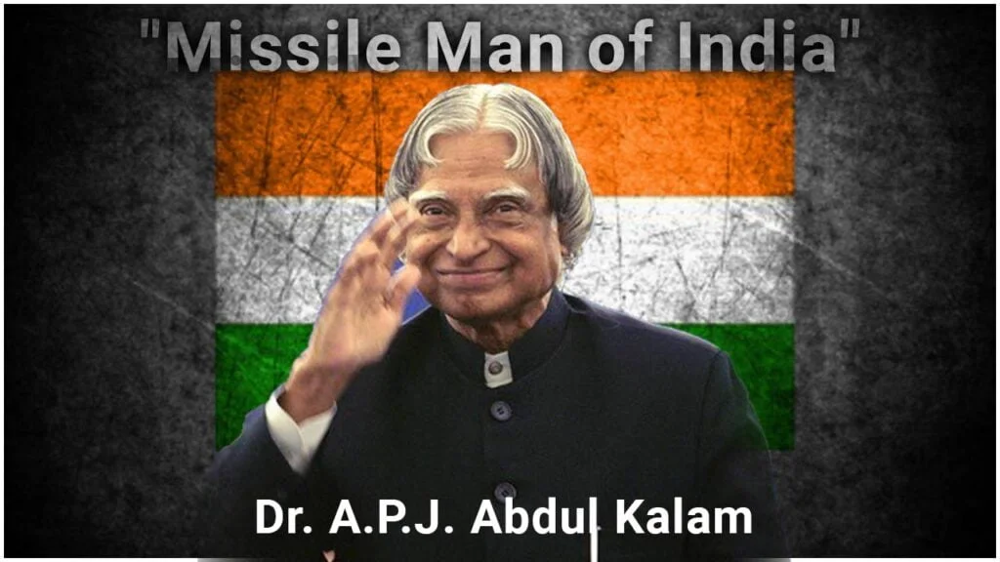

Dr. A.P.J. Abdul Kalam, widely known as the "Missile Man of India," was a distinguished Indian scientist and statesman who served as the 11th President of India from 2002 to 2007. Born on October 15, 1931, in Rameswaram, Tamil Nadu, he emerged from humble beginnings to become one of the most influential figures in Indian science and technology.
Dr. A.P.J. Abdul Kalam's life and work inspire us to strive for excellence, remain humble, and serve humanity. His legacy will continue to live on in the hearts and minds of people worldwide.